도시계획기사 (2021-03-07 기출문제)
1과목: 도시계획론
1. 자본주의 사회의 도시계획에 대한 비판적 분석을 통해 형성되었으며, 도시에서 일어나는 끊임없는 계층 간의 갈등에 대해 정부가 간섭하는 과정을 통해 현대의 도시계획을 분석하고 설명한 계획이론 모형은?
- 협력적 계획 모형
- 유기적 계획 모형
- 합리적 계획 모형
- 정치경제 계획 모형
(정답률: 79%)

2. 다음 중 도시계획을 둘러싼 최근의 경향으로 보기 어려운 것은?
- 각종 개발사업에 있어 민간자본의 참여 축소
- 환경 문제에 대한 의식 증대
- 지방정부의 권한 강화 및 각종 이해집단의 영향력 증대
- 복합용도지구의 확대
(정답률: 80%)
3. 도시계획 수립을 위한 조사ㆍ분석에 대한 설명이 틀린 것은?
- 목표를 달성하는데 걸림돌로 작용할 수 있는 제약요건을 찾아낸다.
- 현황조사ㆍ분석은 주로 정태적인 측면에서만 파악되어야 한다.
- 목표설정과 현황조사ㆍ분석은 서로 영향을 주고받으며 동시에 진행되어야 한다.
- 현황조사에서는 도면자료와 현지답사를 통한 실태조사가 모두 필요하기도 하다.
(정답률: 81%)
4. 튀넨이 주장한 지대이론의 기본가정과 거리가 먼 것은?
- 농업 생산품이 유일한 단핵도시다.
- 토지의 비옥도, 기후, 기타 물리적 요소가 균일한 지역이다.
- 모든 사람들은 이윤극대화를 추구한다.
- 수송비는 도심으로부터의 거리에 반비례한다.
(정답률: 72%)
5. 도로의 노면 또는 교통광장(교차점광장만 해당)의 일정한 구역에 설치된 주차장으로서 일반의 이용에 제공되는 것은?
- 노상주차장
- 노외주차장
- 부설주차장
- 기계식주차장
(정답률: 82%)
6. A도시의 2015년 인구수는 50만명이었고, 2020년에는 58만명으로 증가하였다. 등차급수법에 따른 2025년의 추정 인구는?
- 18만 5천명
- 66만명
- 80만명
- 350만명
(정답률: 80%)
7. 도시 가로망 형태 중 도시의 기념비적인 건물을 중심으로 주변과 연결하고 중심지를 기점으로 주요간선로를 따라 도시의 개발축을 형성 하는 특징을 갖는 것은?
- 격자형
- 방사형
- 혼합형
- 선형
(정답률: 82%)
8. 우리나라의 도시계획 제도에 관한 설명이 틀린 것은?
- 도시ㆍ군 기본계획은 도시의 미래상을 제시하는 장기적ㆍ종합적인 성격의 계획이다.
- 특별시ㆍ광역시ㆍ시 또는 군의 관할 구역에서 수립되는 다른 법률에 따른 토지의 이용ㆍ개발 및 보전에 관한 계획은 도시ㆍ군 계획의 기본이 된다.
- 지역주민은 공청회, 공람 등을 통하여 도시 계획과정에 직ㆍ간접적으로 참여할 수 있다.
- 도시ㆍ군 관리계획은 광역도시계획과도시ㆍ군 기본계획에 부합되어야 한다.
(정답률: 59%)
9. 둘 이상의 시 또는 군의 공간구조 및 기능을 상호 연계시키고 환경을 보전하며 광역시설을 체계적으로 정비하기 위하여 필요한 경우 지정한 계획권의 장기 발전 방향을 제시하는 계획은?
- 도시ㆍ군기본계획
- 국토 및 지역계획
- 수도권정비계획
- 광역도시계획
(정답률: 77%)
10. 1980년대 미국을 중심으로 출현한 도시 개발 패러다임인 뉴어바니즘(New Urbanism)운동의 기본적인 원칙과 거리가 먼 것은?
- 도시에 미치는 악영향을 최소화하기 위한 단일 용도의 토지이용
- 에너지 효율의 증대와 친환경적인 개발을 통한 환경 영향의 최소화
- 다양한 연령, 계층, 문화, 인종의 수용이 가능한 혼합용도개발
- 대중교통중심의 개발
(정답률: 84%)
11. 집단생잔법에 대한 설명으로 옳은 것은?
- 기준년도의 인구와 출생률, 사망률, 인구이동 요인을 고려하여 장래인구를 에측한다.
- 과거의 일정 기간에 나타난 실제 인구의 변화 자료에 복리이율방식을 적용하여 장래인구를 예측한다.
- 업종별 취업인구의 예측 결과를 바탕으로 장래인구를 예측한다.
- 경제적 압축요인과 흡인요인이 도시인구를 변화시키는 요소라고 가정하고, 이들 간의 관계를 방정식으로 표현하여 장래인구를 예측한다.
(정답률: 77%)
12. 샤핀(F.S.Chapin, 1965)이 제시한 토지이용의 결정요인 분류에 해당하지 않는 것은?
- 공공의 이익요인
- 경제적 요인
- 문화적 요인
- 사회적 요인
(정답률: 62%)
13. 도시계획의 필요성으로 틀린 것은?
- 공공재의 부족을 방지하기 위하여
- 토지이용의 효율화를 높이기 위하여
- 인간사회의 개인적인 목표를 이루기 위하여
- 도시가 원활히 가능할 수 있게 하기 위하여
(정답률: 85%)
14. 아래의 설명과 같은 르네상스 시대의 이상도시를 구성하고자 하였던 사람은?
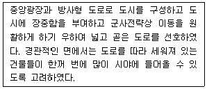
- 비아지오 로제티(Biaggio Rossetti)
- 도메니코 폰타나(Domenico Fontana)
- 레온 알베르티(Leon Alberti)
- 레오나르도 다빈치(Leonardo da Vinci)
(정답률: 65%)
15. 토지이용계획의 실현수단을 크게 직접적 수단과 간접적 수단으로 구분할 때 다음 중 간접적 수단이 아닌 것은?
- 보조금 혜택
- 도시개발사업
- 도시시설의 정비
- 지역ㆍ지구의 지정
(정답률: 74%)
16. 도시지역과 그 주변지역의 무질서한 시가화를 방지하고 계획적ㆍ단계적인 개발을 도모하기 위해 일정 기간 동안 시가화를 유보할 필요가 있다고 인정하여 지정하는 용도구역은?
- 개발제한구역
- 도시자연공원구역
- 계획관리구역
- 시가화조정구역
(정답률: 82%)
17. 중심지이론의 시장원리에 관한 설명이 옳은 것은?
- 한 중심지가 주변에 있는 6개의 차하위 중심지를 완전히 지배하여 통제 효율의 극대화를 도모한다.
- 고차중심지의 보완구역 크기는 4배수로 증가한다.
- 고차중심 재화가 될 수 있는 한 짧은 거리를 이동하면서 주변의 저차 보완구역에 공급되려고 한다.
- 교통로상에 입지하는 중심지의 수를 극대화하는 포섭원리이다.
(정답률: 50%)
18. 국토의 계획 및 이용에 관한 법령에 따라 현재 지정되는 용도지구의 분류가 옳은 것은?
- 미관지구 : 중심미관지구, 역사문화미관지구, 일반미관지구
- 경관지구 : 자연경관지구, 수변경관지구, 시가화경관지구
- 보존지구 : 문화자원보존지구, 중요시설물보존기구, 생태계보존지구
- 취락지구 : 자연취락지구, 집단취락지구
(정답률: 64%)
19. 교통수요예측의 4단계 과정을 옳게 나열한 것은?
- 통행 발생(Trip Generation) → 수단 분담(Modal Split) → 통행 배분(Trip Distribution) → 노선 배정(Traffic Assignment)
- 통행 발생(Trip Generation) → 수단 분담(Modal Split) → 노선 배정(Traffic Assignment) → 통행 배분(Trip Distribution)
- 통행 발생(Trip Generation) → 통행 배분(Trip Distribution) → 수단 분담(Modal Split) → 노선 배정(Traffic Assignment)
- 통행 발생(Trip Generation) → 통행 배분(Trip Distribution) → 노선 배정(Traffic Assignment) → 수단 분담(Modal Split)
(정답률: 67%)
20. 국토의 계획 및 이용에 관한 법령에 따른 기반시설의 정의 및 구분에 따라, 다음 중 보건위생시설에 해당하지 않는 것은?
- 도축장
- 장사시설
- 종합의료시설
- 수질오염방지시설
(정답률: 57%)
2과목: 도시설계 및 단지계획
21. 공동주택을 건설하는 주택단지에 설치하는 도로의 폭 기준은? (단, 해당 도로를 이용하는 공동주택의 세대수가 100세대 미만이고 해당 도로가 막다른 도로로서 그 길이가 35m미만인 경우)
- 4m 이상
- 6m 이상
- 8m 이상
- 12m 이상
(정답률: 50%)
22. 다음과 같은 조건을 가진 주택단지에서 합리식(Rational Method)에 의한 최대계획 유수 유출량은? (단, 배수면적(A): 30ha, 유출계수(C): 0.6, 평균강우강도(I): 30mm/h)
- 1.5 m3/sec
- 2.0m3/sec
- 2.4m3/sec
- 3.6m3/sec
(정답률: 56%)
23. 도로의 배치간격 기준이 틀린 것은? (단, 도시ㆍ군계획시설의 결정ㆍ구조 및 설치기준에 관한 규칙에 따른다.)
- 보조간선도로와 집산도로 : 250m 내외
- 주간선도로와 주간선도로 : 1,500m 내외
- 주간선도로와 보조간선도로 : 500m 내외
- 국지도로간 : 가구의 짧은 변 사이의 배치간격은 90m 내지 150m 내외, 가구의 긴 변 사이의 배치간격은 25m 내지 60m 내외
(정답률: 67%)
24. 어린이공원의 규모 및 유치거리 기준으로 옳은 것은?
- 1,500m2이상, 200m 이하
- 1,500m2이상, 250m 이하
- 2,000m2이상, 200m 이하
- 2,000m2이상, 250m 이하
(정답률: 76%)
25. 경관상세계획의 수립 대상 지역에서 경관상세계획을 수립하는 경우의 고려사항으로 가장 거리가 먼 것은?
- 조망점을 설정하는 경우 모든 조망점에서 근경보다 원경이 원활하게 확보되도록 한다.
- 당해 구역의 미래상을 개개의 건축물을 통하여 체험하는 것이 아니라 구역 전체를 미래 지향적인 관점에서 입체적으로 체험할 수 있도록 한다.
- 안내표지판 가로시설물 등은 당해 구역의 이미지를 연출하는 데 중요한 역할을 하므로 구역 분위기의 특성과 정체성을 인지할 수 있도록 한다.
- 지표물은 주민이나 방문자에게 방향감을 제공하는 등 당해 지역에 대한 이미지를 강화시킬 수 있도록 상징적 요소를 개발하여 적재적소에 배치하도록 한다.
(정답률: 76%)
26. 향(向) 분석에 관한 설명이 옳지 않은 것은?
- 태양과 기후조건에 효율적으로 대처하는 구조를 찾아낼 수 있다.
- 향(向)이 변화함에 따라 주택의 형태가 적응할 수 있도록 해야 한다.
- 식생은 단지에서 주호군의 향을 결정하는데 가장 영향을 미치는 주 요소이다.
- 강풍에 의한 피해를 방지하기 위해서 주호군의 형태는 날개와 같은 모양으로 되어 바람이 그 위를 미끄러져 가게 하는 것이 좋다.
(정답률: 72%)
27. 래드번(Radbum) 계획의 기본 원리와 가장 거리가 먼 것은?
- 슈퍼블록의 구성
- 보ㆍ차의 혼용
- 공동의 오픈스페이스 조정
- 기능에 따른 도로 구분
(정답률: 73%)
28. 전통적 지역지구제의 한계성을 극복하여 개발자에게 적당한 개발 이익을 부여하는 대신, 공공에게 필요한 쾌적요소를 제공하도록 유도하기 위해 개발된 계획기법은?
- 보상지역지구제(incentive zoning)
- 개발권이양제(TDR)
- 계획단위개발(PUD)
- 혼합공동개발(MXD)
(정답률: 52%)
29. 획지형태와 토지이용에 대한 설명으로 틀린 것은?
- 토지이용의 효율성 측면에서 세장비를 가능한 크게 계획하는 경향이 있다.
- 세장비는 앞너비에 대한 깊이의 비(깊이/앞너비)를 말한다.
- 같은 길이의 도로에 많은 획지가 접하려면 가능한 한 단위획지의 앞너비는 최소가 되는 것이 좋다.
- 동서축 가구의 획지는 세장비를 작게 하는 것이 일조권의 확보에 유리하다.
(정답률: 67%)
30. 획지 계획에 대한 설명으로 틀린 것은?
- 상업용지의 경우 수요자 요구에 맞는 적정하고 다양한 규모의 획지분할을 추구해야 한다.
- 건축될 건물의 형태는 고려하지 않아도 된다.
- 상업용지의 획지규모는 도로의 위계에 큰 영향을 받는다.
- 획지의 규모가 과대 또는 과소할 경우, 건축물의 개발을 불가능하게 하거나 지연시킬 수 있다.
(정답률: 86%)
31. 주택건설기준 등에 관한 규정에 따른 근린생활시설 등에 관한 아래 설명에서 ( )에 들어갈 내용으로 옳은 것은?
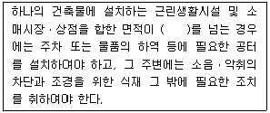
- 500m2
- 1,000m2
- 1,500m2
- 2,000m2
(정답률: 52%)
32. 공동주택 주거단위의 단면을 단층형과 복층형에서 동일 층으로 하지 않고 한 층씩 어긋나게 배치하는 단면 구성형식은?
- 플랫형(flat type)
- 스킵형(skip floor type)
- 메조넷형(maisonette type)
- 탑상형(tower type)
(정답률: 60%)
33. 도시ㆍ군계획시설의 결정ㆍ구조 및 설치기준에 관한 규칙에 따라 광장을 교통광장과 일반 광장으로 구분할 때, 다음 중 교통광장에 해당하지 않은 것은?
- 역전광장
- 교차점광장
- 중심대광장
- 주요시설광장
(정답률: 63%)
34. 다음 중 페리(Clarence A. Perry)가 제안한 근린주구(Neighborhood Unit)의 물리적 기본요소에 해당하지 않는 것은?
- 초등학교
- 작은가게
- 공동체 의식
- 작은 공원과 운동장
(정답률: 67%)
35. 도시설계의 역할에 해당하지 않는 것은?
- 지구 특성 반영
- 도시 슬럼화 촉진
- 바람직한 도시개발로의 유도수단
- 도시계획과 건축규제 사이의 매개적 관리 수단
(정답률: 84%)
36. 주민이 지구단위계획의 수립 및 변경에 관한 사항을 제안하는 때에 갖추어야 할 요건 중, 제안한 지역의 대상 토지면적의 얼마 이상에 해당하는 토지소유자의 동의가 있어야 하는가? (단, 국공유지의 면적은 제외한다.)
- 1/4 이상
- 1/3 이상
- 1/2 이상
- 2/3 이상
(정답률: 69%)
37. 도시의 스카이라인 형성에 직접적인 영향을 미치는 지표로 가장 거리가 먼 것은?
- 용적률
- 입면차폐도
- 건축물 높이
- 가구(街區) 크기
(정답률: 70%)
38. 지구단위계획에 대한 도시ㆍ군관리계획결정도의 표시기호가 틀린 것은?
- 건축지정선
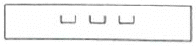
- 건축한계선
- 벽면지정선
- 공공보행통로
(정답률: 55%)
39. 건폐율 60%, 용적률 540%를 적용할 경우 최대 층수는? (단, 각 층의 평면이 동일한 경우이다.)
- 3층
- 5층
- 9층
- 14층
(정답률: 86%)
40. 도시지역 외 지역에 지정하는 지구단위계획 구역을 당해 구역의 중심기능에 따라 구분할 때, 그 분류에 해당하지 않는 것은?
- 주거형
- 역사문화형
- 산업유통형
- 관광휴양형
(정답률: 58%)
3과목: 도시개발론
41. 도시환경 및 시설에 대해 현재까지는 불량ㆍ노후화 현상이 발생하지 않았으나 현 상태로 방치할 경우 환경 악화가 예상되는 지역에 예방적 조치로 시행하는 재개발방식은?
- 철거재개발(Redevelopment)
- 수복재개발(Rehabilitation)
- 개량재개발(Improvement)
- 보존재개발(Conservation)
(정답률: 45%)
42. 지역의 문화전통과 자연환경에 첨단기술산업의 활력을 도입하여 첨단기술산업군, 학술 연구 기관, 쾌적한 생활환경의 3가지 기능이 잘 조합된 도시 조성을 실현하여 미래지향적인 새로운 정주 체계를 달성하고자 하는 개발은?
- 연구단지
- 테크노폴리스
- 첨단산업단지
- 기술창업보육센터
(정답률: 56%)
43. 허프(Huff) 모형을 이용한 상업 시설의 수요 추정에 대한 설명이 틀린 것은?
- 수요는 상업 시설의 크기와는 반비례한다.
- 수요는 상업 시설까지의 거리에 반비례한다.
- 소비자가 상업 시설을 선정하는 행동을 확률적으로 보여준다.
- 개별 소매점의 고객흡입력을 계산하는 정량적 수요 예측 모형이다.
(정답률: 69%)
44. 기업금융과 비교하여 프로젝트 파이낸싱이 갖는 특징에 대한 설명으로 옳지 않은 것은?
- 담보 : 사업자산 및 현금 흐름
- 사후관리 : 채무 불이행 시 상환청구권 행사
- 채무수용능력 : 부외금융으로 채무수행능력 제고
- 소구권 행사 : 모기업에 대한 소구권 행사 배제 또는 제한
(정답률: 49%)
45. 도시 및 주거환경정비법령상의 정비사업과 관련하여, 사업시행자가 정비구역의 안과 밖에 새로 건설한 주택 또는 이미 건설되어 있는 주택의 경우 그 정비사업의 시행으로 철거되는 주택의 소유자 또는 세입자를 임시로 거주하게 하는 등 그 정비구역을 순차적으로 정비하여 주택의 소유자 또는 세입자의 이주대책을 수립하는 것은?
- 자력재개발방식
- 위탁재개발방식
- 순환정비방식
- 합동재개발방식
(정답률: 75%)
46. 공영개발의 원칙에 대한 설명이 틀린 것은?
- 도시의 균형개발 추진
- 사유재산권의 보호 필요
- 쾌적한 주거편익시설의 설치
- 국민주택건설용지와 국민주택규모 이하의 임대주택용지에 대하여는 무상으로 공급
(정답률: 70%)
47. 도시개발법령상 도시개발구역으로 지정할 수 있는 대상 지역 및 규모 기준이 틀린 것은? (단, 도시지역의 경우)
- 주거지역 : 1만m2 이상
- 상업지역 : 1만m2 이상
- 공업지역 : 1만m2 이상
- 자연녹지지역 : 1만m2 이상
(정답률: 71%)
48. 국토이 계획 및 이용에 관한 법령상 아래와 같이 정의되는 구역은?
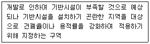
- 입지규제최소구역
- 시가화조정구역
- 도시자연공원구역
- 개발밀도관리구역
(정답률: 73%)
49. 도시개발사업 방식 중 환지방식에 대한 설명으로 틀린 것은?
- 체비지 매각 등을 통해 적은 자본으로도 사업 시행이 가능하다.
- 공공기관이 사업을 주도함으로써 개발 이익의 사유화를 방지할 수 있다.
- 최소한의 사업비 투입으로 공공시설을 확보할 수 있다.
- 해당 토지의 지가가 주변보다 높거나 대지의 효용 증진을 위한 정비를 목적으로 할 경우 시행하는 방식이다.
(정답률: 50%)
50. 경제기반모형(Economic Base Model)에 대한 설명이 틀린 것은?
- 지역경제를 구성하는 산업을 크게 기반산업과 비기반산업으로 구분한다.
- 지역의 수출량 한 단위가 지역경제에 미치는 영향을 지역의 수출승수라고 하며 수출승수는 시간에 대해 일정하다고 가정한다.
- 지역 내 산업의 경제규모는 해당 산업에 종사하는 고용인구로 나타낸다.
- 산업 간 연관 관계가 구체적으로 고려되어 있어 산업별 수출량 증가가 지역경제에 미치는 효과를 분석하는데 주로 활용된다.
(정답률: 50%)
51. 부동산과 금융을 결합한 형태로서 유동성 문제와 소액투자 곤란의 문제를 증권화라는 방식을 이용하여 해결하고 있는 부동산 펀드의 대표적인 형태는?
- 부동산 신디케이션
- 에스크로우(Escrow)
- 자산담보부증권(ABS)
- 부동산투자신탁(REITs)
(정답률: 66%)
52. 다음 중 88올림픽 이후의 주택가격 폭등에 대처하기 위해 주택 대량 공급 방안으로 건설된 수도권 1기 신도시만을 나열한 것은?
- 분당, 일산, 과천, 김포, 목동
- 분당, 일산, 평촌, 산본, 중동
- 화성, 송파, 파주, 분당, 일산
- 목동, 과천, 상계, 영통, 광명
(정답률: 71%)
53. 민간이 자금을 투자하여 사회기반시설을 건설하면 정부가 일정 운영기간 동안 이를 임차하여 시설을 사용하고 그 대가로 임대료를 지급하는 방식은?
- BTO 방식
- BTL 방식
- BOT 방식
- BOO 방식
(정답률: 70%)
54. 도시 및 주거환경정비법령에 따른 정비사업의 유형이 아닌 것은?
- 주거환경개선사업
- 재개발사업
- 재건축사업
- 가로주택정비사업
(정답률: 71%)
55. 다음 중 수출기반모형이 요구하는 가정사항이 아니 것은?
- 동일한 노동 생산성
- 동일한 소비 수준
- 폐쇄된 경제
- 동일한 생산비
(정답률: 37%)
56. 도시개발사업의 시장분석과 관련하여 수요 분석을 위한 정성적 예측모형에 해당하지 않는 것은?
- 시나리오법
- 인과분석법
- 델파이법
- 판단결정모델
(정답률: 38%)
57. 재개발사업을 위한 정비계획은 노후ㆍ불량건축물의 수가 전체 건축물의 수의 얼마 이상인 지역을 기준으로 입안하는가?
- 2분의 1
- 3분의 1
- 3분의 2
- 4분의 3
(정답률: 56%)
58. 도시 마케팅의 구성요소 중 고객으로 간주하기 힘든 것은?
- 주민
- 투자기업
- 경쟁도시
- 관광객 및 방문객
(정답률: 73%)
59. 계획단위개발(PUD)의 4단계 시행절차의 순서가 옳은 것은?
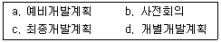
- a-b-d-c
- b-c-d-a
- b-d-a-c
- a-d-b-c
(정답률: 66%)
60. 델파이법에 관한 설명이 틀린 것은?
- 조사하고자 하는 특정 사항에 대해 일반인 집단을 대상으로 반복 앙케이트를 행하여 의견을 수집하는 방법이다.
- 예측을 하는 데 회의방식보다 서면을 통한 설문방식이 올바른 결론에 도달할 가능성이 높다는 가정에 근거한다.
- 예측과제의 추출 처리 → 조사표 설계 → 조사대상자 선정 → 조사 실시 → 조사결과의 집계와 분석 과정을 거친다.
- 최초의 앙케이트를 반복 수렴한다는 데에서 여러 사람의 판단이 피드백 되기에 결론을 의미 있게 받아들일 수 있다.
(정답률: 55%)
4과목: 국토 및 지역계획
61. 국토기본법상 “국토계획”의 정의에 따른 세부 구분에 해당하지 않는 것은?
- 국토종합계획
- 시ㆍ군종합계획
- 도시계획
- 부문별계획
(정답률: 68%)
62. 경제기반이론(Economic Base Theory)의 단점으로 비판받는 내용이 아닌 것은?
- 실제로는 기반부문과 비기반부문으로 구분하기 어려운 산업이 있다.
- 분석대상지역의 범위에 따라 기반산업이 가변적이다.
- 수입 부분을 완전히 무시하고 있다.
- 지역 경제 구조에 따라 기반비가 변하다고 가정하여 예측 내용의 신뢰가 떨어진다.
(정답률: 43%)
63. 학문으로서의 지역계획에 대한 설명이 옳은 것을 모두 나열한 것은?
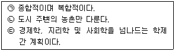
- ㉠, ㉡
- ㉠, ㉢
- ㉡, ㉢
- ㉠, ㉡, ㉢
(정답률: 80%)
64. 버제스(Burgess)의 동심원 구조에서 근로자(저소득층) 주택지대에 해당하는 것은?
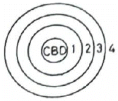
- 1
- 2
- 3
- 4
(정답률: 59%)
65. 쇄신의 확산 과정의 특성을 구성하는 요소로 가장 거리가 먼 것은?
- 쇄신의 채택율
- 시간
- 거리
- 생산력
(정답률: 41%)
66. ‘Competitive Advantage of Nations’란 저서를 통해 국가 경제의 경쟁력은 투입요소 뿐 아니라 사회 전반적인 여건이나 환경에도 크게 영향을 받는다는 산업클러스터론을 제안한 학자는?
- 필립 쿠크
- 마이클 포터
- 알버트 허쉬만
- 헤리 리차드슨
(정답률: 42%)
67. 다음 중 지역계획이 하나의 학문영역으로서 출발하게 된 세 가지 근간으로 가장 거리가 먼 것은?
- 지리학과 경제학의 공간정책적 접근방법의 발전된 형태로서 정립된 지역계획학
- 현실 지향적이며 참여적이고 사회적 측면을 강조하는 경향으로부터 발전한 지역계획학
- 도시계획의 확대된 개념으로서 도시계획과 농촌계획을 연속적 개념으로 접근하는 지역계획학
- 사회주의 내지 계획경제체제 하에서 국가계획의 하위계획 이론으로서 성립된 지역계획학
(정답률: 33%)
68. 정부가 국민의 쾌적하고 살기 좋은 생활을 영위하기 위하여 필요하다고 설정한 가구구성별 최소 주거면적, 방의 수, 화장실의 설비기준, 안전성, 쾌적성 등을 고려한 주택의 구조, 성능 및 환경기준을 무엇이라 하는가?
- 일반주거기준
- 평균주거기준
- 목표주거기준
- 최저주거기준
(정답률: 63%)
69. 지역혁신체제론에 관한 아래 설명에서 ( )에 들어갈 내용으로 옳은 것은?
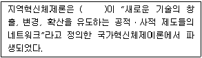
- Weber
- Marshall
- Cooke
- Freeman
(정답률: 46%)
70. 지역 간 인구이동에 관한 라벤슈타인(E. G. Ravenstein)의 인구이동 법칙에 대한 설명이 옳은 것은?
- 지역 간의 인구이동은 지역 간의 거리에 비례한다.
- 교통수단, 상업의 발전은 인구이동의 감소를 유도한다.
- 도시-농촌 간 인구이동 성향에 있어서 일반적으로 도시 출신이 농촌 출신보다 높은 이동성향을 지니고 있다.
- 지역 간 인구이동은 농촌에서 근처의 소도시로, 소도시에서 가장 빨리 성장하는 다른 도시로 이동하는 단계적 이동형태를 취한다.
(정답률: 58%)
71. 다음 회귀모형의 결정계수(R2)DP 대한 설명으로 옳은 것은? (단, T: 평균통행횟수, P: 가구당 인구, V: 가구당 자동차 보유대수)
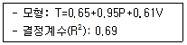
- P가 1단위 증가할 때 T도 1단위 증가한다.
- V가 1단위 증가할 때 T도 1단위 증가한다.
- P와 V가 1단위 증가할 때 T가 69% 증가한다.
- 자료에 대한 회귀모형의 설명력이 69%이다.
(정답률: 55%)
72. 생산요소의 지역 간 이동이 자유롭게 허용된다면 자연히 지역 간 형평이 달성된다고 보는 지역 균형성장론에 해당하는 것은?
- 종속이론
- 누적인과모형
- 성장거점이론
- 신고전학파의 지역경제성장이론
(정답률: 64%)
73. 국토 및 지역계획 수립 과정에서 반드시 고려해야 할 사항으로 가장 거리가 먼 것은?
- 계획집행수단 강구
- 해외 유사 사례 분석
- 대안의 비교 및 검토
- 문제의 진단 및 분석
(정답률: 62%)
74. 다음 중 수도권정비계획법에 의한 권역구분이 아닌 것은?
- 개발제한권역
- 과밀억제권역
- 성장관리권역
- 자연보전권역
(정답률: 59%)
75. 부드빌(O. Boudevile)의 지역 구분에 해당하지 않는 것은?
- 낙후지역(Lagging Region)
- 계획지역(Planning Region)
- 분극지역(polarized region)
- 동질지역(Homogeneous Area)
(정답률: 61%)
76. 인간이 필요로 하는 최소한의 재화와 서비스 품목을 소득집단에게 공급해 주고자 하는 지역개발전략은?
- 기본수요전략
- 농촌개발전략
- 성장거점전력
- 오지개발전략
(정답률: 75%)
77. A시의 기반 부분 고용자 수가 4만명, 비기반 부분 고용자 수가 6만5천명일 때 경제기반승수는?
- 0.381
- 0.615
- 1.625
- 2.625
(정답률: 44%)
78. 다음 중 제4차 국토종합계획 수정계획(2006 ~ 2020)의 7+1 경제권역 구분에 해당하지 않는 것은?
- 수도권
- 강원권
- 충청권
- 전남권
(정답률: 47%)
79. 크리스탈러가 주장한 중심지이론(Central Place Theory)의 포섭 원리가 아닌 것은?
- 중심 원리
- 시장 원리
- 교통 원리
- 행정 원리
(정답률: 57%)
80. 다음 중 리(E. S. Lee)가 인구이동을 설명하기 위해 사용한 개념에 해당하지 않는 것은?
- 흡인요인
- 확률적 요인
- 밀어내는 요인
- 중간개입 장애요인
(정답률: 55%)
5과목: 도시계획관계법규
81. 도시 및 주거환경정비법령상 시장ㆍ군수가 그 건설에 소요되는 비용의 전부 또는 일부를 부담할 수 있는 주요 정비기반시설에 해당하지 않는 것은?
- 공원
- 하천
- 공용주차장
- 소방용수시설
(정답률: 49%)
82. 국토의 계획 및 이용에 관한 법령에서 규정한 용도지구에 해당하는 것은?
- 보존지구
- 미관지구
- 시설보호지구
- 개발진흥지구
(정답률: 55%)
83. 국토기본법상 국토정책위원회에 대한 설명으로 옳은 것은?
- 국토정책위원회는 위원장 1명, 부위원장 1명, 34명 이내의 위원으로 구성한다.
- 국토교통부장관 소속으로 둔다.
- 분과위원회의 심의는 국토정책위원회의 심의로 본다.
- 부위원장은 국무총리와 위촉위원 중에서 호선으로 선정된 위원으로 한다.
(정답률: 47%)
84. 관광진흥법상에 정의된 내용으로 옳은 것은?
- 휴양 콘도미니엄업은 관광객 이용시설업에 해당한다.
- 관광지란 자연적 또는 문화적 관광자원을 갖추고 관광객을 위한 기본적인 편의시설을 설치하는 지역이다.
- 관광지 및 관광단지의 지정권자는 문화체육관광부장관이다.
- 전국을 대상으로 하는 관광개발 기본계획의 수립권자는 시ㆍ도지사다.
(정답률: 64%)
85. ㉠과 ㉡에 들어갈 말이 모두 옳은 것은?
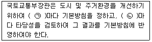
- ㉠ 10년 ㉡ 5년
- ㉠ 10년 ㉡ 2년
- ㉠ 5년 ㉡ 3년
- ㉠ 5년 ㉡ 2년
(정답률: 74%)
86. 도시 및 주거환경정비법령상 “정비기반시설”에 해당하지 않는 것은? (단, 주거환경개선 사업을 위하여 지정ㆍ고시된 정비구역에 설치하는 공동이용시설로서 법 제52조에 따른 사업 시행계획서에 해당 특별자치시장ㆍ특별자치도지사ㆍ시장ㆍ군수 또는 자치구의 구청장이 관리하는 것으로 포함된 시설의 경우는 고려하지 않는다.)
- 공원
- 공용주차장
- 공동구
- 체육시설
(정답률: 54%)
87. 과밀부담금의 산정 기준으로 옳은 것은?
- 과밀부담금은 건축비의 100분의 10으로 한다.
- 지역별 여건에 따라 과밀부담금을 건축비의 100분의 3까지 조정할 수 있다.
- 건축비는 해당 권역 건축물들의 표준건축비를 기준으로 한다.
- 과밀부담금의 산정방식은 신축과 증축의 경우에 동일하다.
(정답률: 55%)
88. 도시공원 및 녹지 등에 관한 법령상 녹지의 기능에 따른 세분에 해당하는 것으로만 나열한 것은?
- 완충녹지, 자연녹지
- 자연녹지, 생산녹지
- 생산녹지, 경관녹지
- 경관녹지, 완충녹지
(정답률: 71%)
89. 수도권정비계획법령상의 인구집중유발시설 기준이 틀린 것은?
- 「고등교육법」 규정에 따른 산업대학 또는 전문 대학
- 「산업집적활성화 및 공장설립에 관한 법률」의 규정에 따른 공장으로서 건축물의 연면적이 500m2 이상인 것
- 중앙행정기관 및 그 소속기관의 청사로서 건축물의 연면적이 500m2 이상인 것
- 업무용 시설이 주용도인 건축물로서 그 연면적이 25,000m2 이상인 건축물
(정답률: 44%)
90. 노외주차장의 출구와 입구를 각각 따로 설치하여야 하는 주차대수 규모 기준으로 옳은 것은?
- 200대 초과
- 300대 초과
- 400대 초과
- 500대 초과
(정답률: 51%)
91. 환지에 의한 도시개발사업에서 과소 토지의 기준에 관한 설명이 틀린 것은?
- 토지 소유자가 환지 계획에 따라 환지가 이루어질 경우 도시개발사업으로 조성되는 토지에서 받을 수 있는 토지의 면적을 권리면적이라 한다.
- 과소 토지 여부의 판단은 권리면적을 기준으로 한다.
- 기존 건축물이 없는 경우 과소 토지의 기준이 되는 면적을 국토교통부장관이 정하는 바에 따라 규약ㆍ정관 또는 시행규정에서 따로 정할 수 있다.
- 환지로 지정할 토지의 필지수가 도시개발 사업으로 조성되는 토지의 필지수보다 적은 경우, 과소 토지의 기준이 되는 면적을 국토교통부장관이 정하는 바에 따라 규약ㆍ정관 또는 시행규정에서 따로 정할 수 있다.
(정답률: 39%)
92. 주택법령상 간설시설의 설치에 관한 아래의 내용에서 ㉠과 ㉡에 해당하는 규모기준이 모두 옳은 것은?
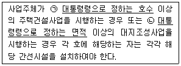
- ㉠ 100호(또는 세대), ㉡ 16,500m2
- ㉠ 100호(또는 세대), ㉡ 33,000m2
- ㉠ 200호(또는 세대), ㉡ 16,500m2
- ㉠ 200호(또는 세대), ㉡ 33,000m2
(정답률: 40%)
93. 국토기본법에서 수립하는 조사 및 계획의 원칙적인 수립 주체가 잘못 연결된 것은?
- 국토종합계획의 수립 - 국토교통부장관
- 도종합계획의 수립 - 도지사
- 부문별계획의 수립 – 중앙행정기관의 장
- 국토조사 – 국토연구원장
(정답률: 58%)
94. 도심ㆍ부도심의 상업기능 및 업무기능의 확충을 위하여 지정되는 지역은?
- 근린상업지역
- 중심상업지역
- 유통상업지역
- 일반상업지역
(정답률: 61%)
95. 「주택법」령상 세대구분형 공동주택이 갖추어야 할 기준이 틀린 것은? (단, 주택법 제 15조에 따른 사업계획의 승인을 받아 건설하는 공동주택의 경우를 말한다.)
- 세대별로 구분된 각각의 공간마다 별도의 욕실, 부엌과 현관을 설치할 것
- 하나의 세대가 통합하여 사용할 수 있도록 세대 간에 연결문 또는 경량구조의 경계벽 등을 설치할 것
- 세대구분형 공동주택의 세대수가 해당 주택단지 안의 공동주택 전체 세대수의 3분의 1을 넘지 아니할 것
- 세대별로 구분된 각각의 공간의 주거전용면적 합계가 해당 주택단지 전체 주거전용면적 합계의 3분의 2를 넘지 아니하는 등 국토교통부장관이 정하여 고시하는 주거전용 면적의 비율에 관한 기준을 충족할 것
(정답률: 41%)
96. 도시개발구역 지정의 해제에 관한 아래 내용 중 ( )안에 공통으로 들어갈 내용으로 옳은 것은?
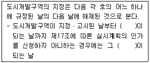
- 2년
- 3년
- 5년
- 7년
(정답률: 53%)
97. 관광단지 조성사업 시행 시 사업시행자가 수용 또는 사용할 수 있는 물건 또는 권리에 해당하지 않는 것은?
- 물의 사용에 관한 권리
- 토지에 관한 소유권 외의 권리
- 토지에 속한 토석 또는 모래와 조약돌
- 토지에 정착한 건물의 소유권에 관한 권리
(정답률: 41%)
98. 수도권정비계획법령에 따른 ‘수도권’의 정의가 옳은 것은?
- 서울특별시와 인천광역시를 말한다.
- 서울특별시와 경기도를 말한다.
- 인천광역시와 경기도를 말한다.
- 서울특별시, 인천광역시와 경기도를 말한다.
(정답률: 66%)
99. 산업단지와 그 지정권자의 연결이 틀린 것은?
- 국가산업단지 : 국토교통부장관
- 일반산업단지 : 시ㆍ도지사
- 도시첨단산업단지 : 시ㆍ도지사
- 농공단지 : 농림축산식품부장관
(정답률: 68%)
100. 도시ㆍ군계획시설의 결정ㆍ구조 및 설치기준에 관한 규칙상 장례식장과 유통업무설비가 모두 입지할 수 있는 용도지역은?
- 일반주거지역
- 준공업지역
- 유통상업지역
- 생산녹지지역
(정답률: 57%)